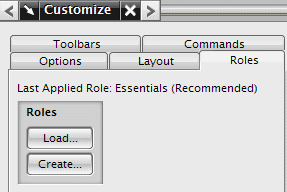
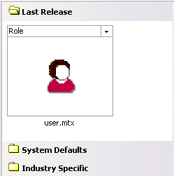

如果您使用过 NX 的早期版本，那么以前的布局以及上一次应用的角色都会列在定制对话框的角色选项卡中。
可以加载来自以前版本的定制信息到当前版本，访问定制对话框(工具→定制→角色选项卡)，点击加载然后选择想要使用的 .mtx 文件。

以前的 .mtx 文件也可以从资源条加载，选择角色资源板，然后点击上一个版本并选择角色文件。
|
注释 |
这个文件只有在使用过早期版本的 NX 时才出现。 |

来自以前版本的 .mtx 文件将被复制到当前版本的相应位置，这将允许您在当前版本中使用以前版本的定制信息。